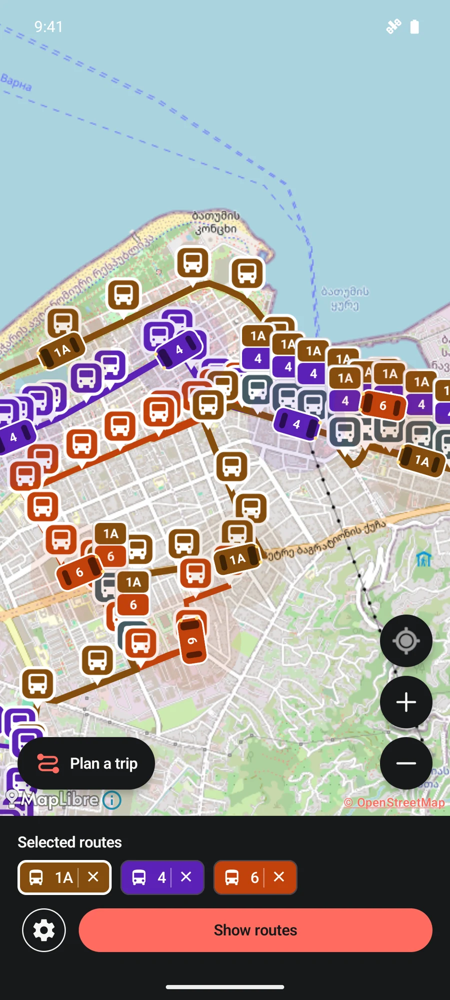

格鲁吉亚公共交通
巴统、库塔伊西、祖格迪迪和博尔若米的公交
在地图上查找公交车辆、站点和线路。查看即将到站的车辆，并在支持的城市规划行程。
- 无需注册
- 浅色和深色主题



出发前和途中都能查
-
地图上的公交车辆
实时查看巴统和库塔伊西的公交车辆。点按定位按钮，在地图上找到自己的位置和附近站点。
-
公交时刻表和到站时间
点按站点即可查看途经线路。在巴统和库塔伊西还可查看即将到站的车辆，在库塔伊西可按线路、方向和日期查询时刻表。
巴统的到站时间根据车辆运行情况估算。

-
查找常坐的线路
按线路编号或方向搜索，可同时选择多条线路。所选线路和车辆会在地图上以不同颜色突出显示。也可快速重新选择最近使用过的线路。


从起点到目的地
打开行程规划器，在地图上选择起点和目的地，再点按「查找路线」。对比耗时、步行距离和换乘次数。
- 最佳方案
- 用时最短
- 步行最少
- 无需换乘
- 步行路段
- 查看前往车站、换乘和到达目的地所需的步行距离和预计用时。
- 候车和乘车
- 查看公交线路编号、上下车站点、预计候车时间和乘车时间。
行程规划目前在巴统提供。行程时间为估算值。
Georgia Transit 网页版与应用
在浏览器或 Telegram 中打开 Georgia Transit。应用发布后，此处将提供应用商店链接。
-
Android
适用于 Android 手机。
链接即将上线 -
iOS
适用于 iPhone。
链接即将上线 -
网页版
在手机或电脑浏览器中使用。
打开网页版 -
Telegram
在 Telegram 内使用小程序。
在 Telegram 中打开